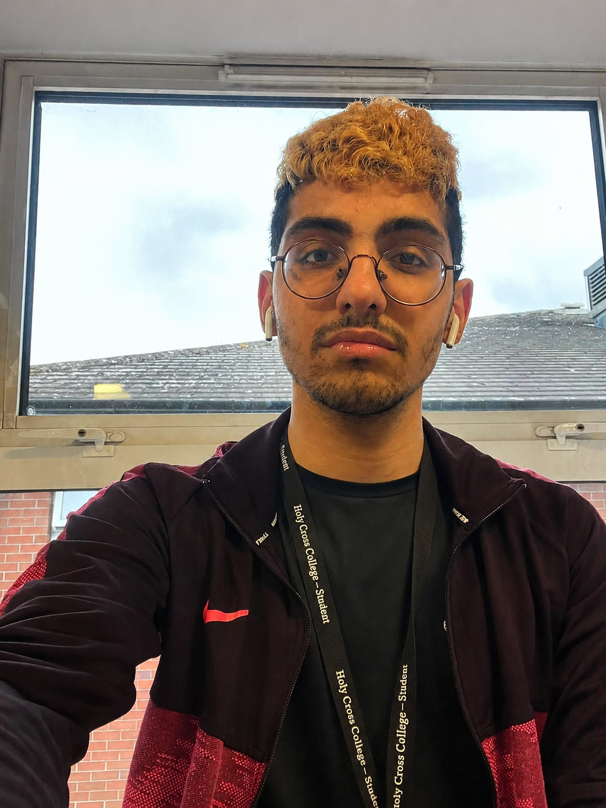

OFFICIAL CHARACTER FILE
KOUROSH
NAME Kourosh Gholamzadeh Rizi
BIRTHDAY 23 January
INSTAGRAM @_Kourowsh
ORIGIN 🇮🇷 Iranian • 🇦🇿 Azerbaijani (According to Himself)
CLASS Overthinking Analyst
STATUS Still processing a simple question...
📄 Biography
Kourosh is a pharmacy student who somehow turned overthinking into a full-time profession. Scientists are still investigating how one human can create forty-seven different solutions to a problem that never existed in the first place.
His day begins at 5:00 AM. Not because he has to... but because his brain has already started planning the next six months before the alarm even rings.
⚠️ Warning: Never ask him a simple question. “What time is it?” somehow becomes a 20-minute presentation with diagrams, history, physics, three alternative theories, and a motivational speech.
He is also obsessed with learning Turkish. Can he speak it fluently? Absolutely not. Will that stop him from confidently using the five words he knows? Also absolutely not.
If he is 30 seconds late, prepare for a full dramatic performance. Missing one bus? To Kourosh, that is basically the opening scene of a disaster movie.
He treats every challenge like the final boss of a video game. Losing is unacceptable, shortcuts are illegal, and “good enough” is considered a personal attack.
Life is never simple when Kourosh is involved... and that is exactly what makes him entertaining.
🏆 Achievement Board
🥇 Master of Overthinking
Unlocked after analysing one simple question for 47 minutes.
⏰ 5 AM Warrior
Started the day before the sun even agreed to participate.
🎭 Drama Specialist
Turned being 30 seconds late into an emotional disaster movie.
🇹🇷 Turkish Beginner
Knows five words and uses them with dangerous confidence.

Character Profile
Legendary Human
MISSION BRIEFING
🃏 Memory Game
Find every matching version of Kourosh hidden inside the memory matrix.
Click one card.
Click a second card.
If they match, they stay open.
Find all 6 Kourosh pairs.
Moves: 0
Matches: 0/6